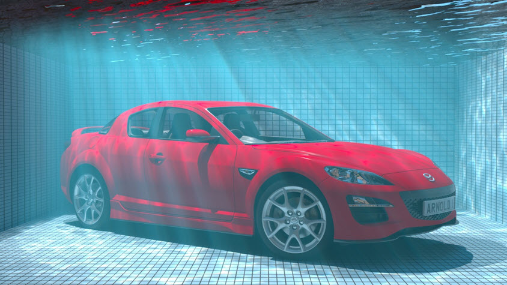
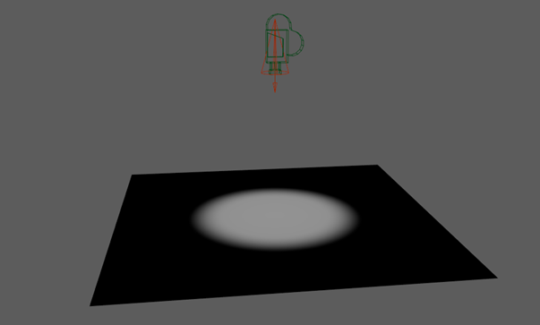
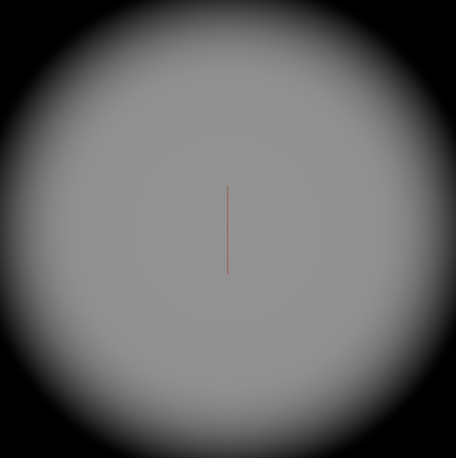
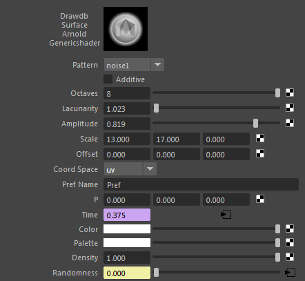
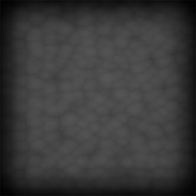
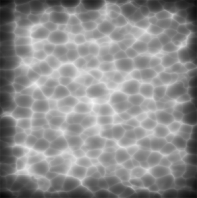
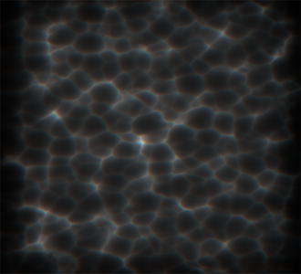
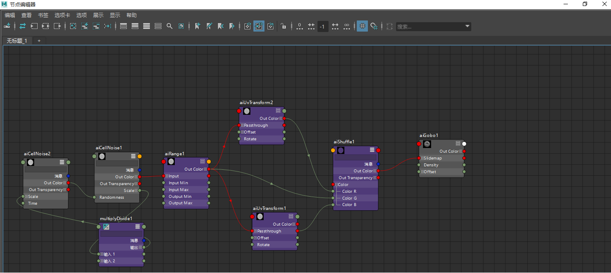
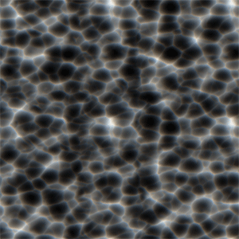

使用单元噪波创建焦散效果：游泳池场景

这一更高级的教程演示了如何使用 cell_noise 着色器 (noise1) 创建池水的焦散效果。此外，本教程还介绍了如何创建带焦散效果的色度色差。最后，我们将使用焦散渲染图像序列以优化渲染。非常感谢 Slava Sych 为本教程提供的帮助。
 |
| cell_noise.time 已设置关键帧 |
要下载对应的场景文件，请单击此处。
场景
- 首先，创建一个平面、一个 spot_light 和一个摄影机。将摄影机和 spot_light 旋转到 90 度，以便它们向下朝向平面。
- 将 spot_light 的 exposure 值增加到 21 左右，并将 roundness 设置为 0。
|  |  |
| 基于摄影机的场景布局和视图 |
Gobo
- 将 gobo 过滤器添加到 spot_light
- 创建一个 cell_noise 着色器，并将其连接到 gobo 过滤器的 slide_map 。将 cell_noise 着色器重命名为“CellNoise1”（稍后我们将创建第二个 cell_noise 着色器）。
- 在 gobo 中，将 filter_mode 更改为“融合”(mix)。*这会在 *spot_light 和 slide_map 之间对结果进行均匀地平均处理。
- 将 gobo 中的“密度”(density) 设置为 0.585。这将允许更多灯光穿过。
CellNoise1
- 取消选中 additive。
- 将 octaves 的数量增加到 8。
- 将 lacunarity 减小到 1.023。
- 将 amplitude 减小到 0.819。
- 对于 XYZ 向量，将 scale 增加到 13, 17, 0。
- 将 coord_space 更改为“UV”。
- 要创建动画，请对“时间”(Time)属性设置关键帧。
|  |  |
| CellNoise1 设置 |
CellNoise2
创建另一个 cell_noise 着色器并将其重命名为 CellNoise2 ，然后将“输出颜色 R”(Out Color R) 连接到 CellNoise1 的 randomness 属性。
将 octaves 的数量增加到 3。
对于 XYZ 向量，将 scale 增加到 19.5, 25.5, 0。
将 coord_space 更改为“UV”。
要创建动画，请对“时间”(Time) 属性设置关键帧。
范围
创建一个范围 着色器，并将其连接到 gobo 过滤器。将 CellNoise1 连接到 range 节点的输入，并将 spot_light 的 exposure 增加到 26。
将 output_min 设置为 1。
将 output_max 设置为 0。
启用“平滑步长”(Smoothstep)。
将 contrast 增加到 2.278。
将 bias 更改为 0.822。
将 gain 更改为 0.2。
|  | |
| CellNoise1 与范围着色器 |
色度色差
UVTransform
现在，需要使用 CellNoise1 着色器创建色度色差影响。
创建两个 UvTransform 节点。
在 UvTransform1 中，将 offset 设置为 -0.001 和 -0.001。
在 UvTransform2 中，将 offset 设置为 0.001 和 0.001。
变换
将变换 着色器连接到 gobo 过滤器。
将范围 的“输出颜色 R”(Out Color R) 连接到变换 中的“颜色 G”(Color G)。
将 UvTransform1 的“输出颜色 R”(Out Color R) 连接到变换 中的“颜色 B”(Color B)。
将 UvTransform2 的“输出颜色 R”(Out Color R) 连接到变换 中的“颜色 R”(Color R)。
|  | |
| 此处显示结果（曝光已减小） |
|  |
| 最终着色器网络 |
优化
要优化渲染过程，可以尝试渲染出图像序列，然后在另一个 spot_light 的 gobo 中打开此序列。
|  | |
| cell_noise 焦散序列 | 后期处理和分片之后 |